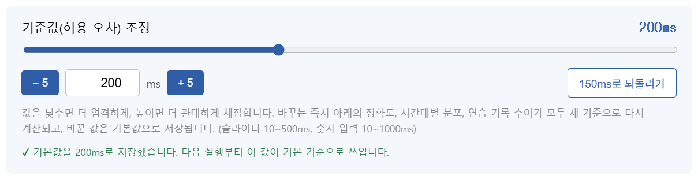
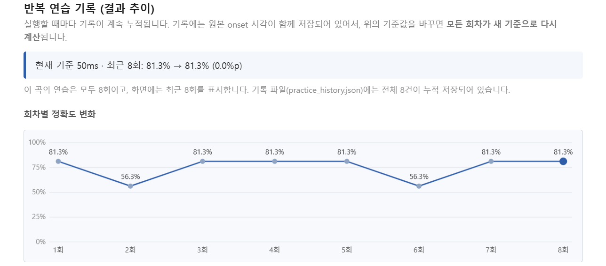
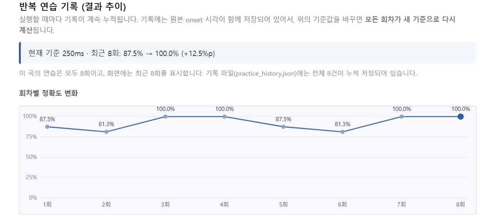
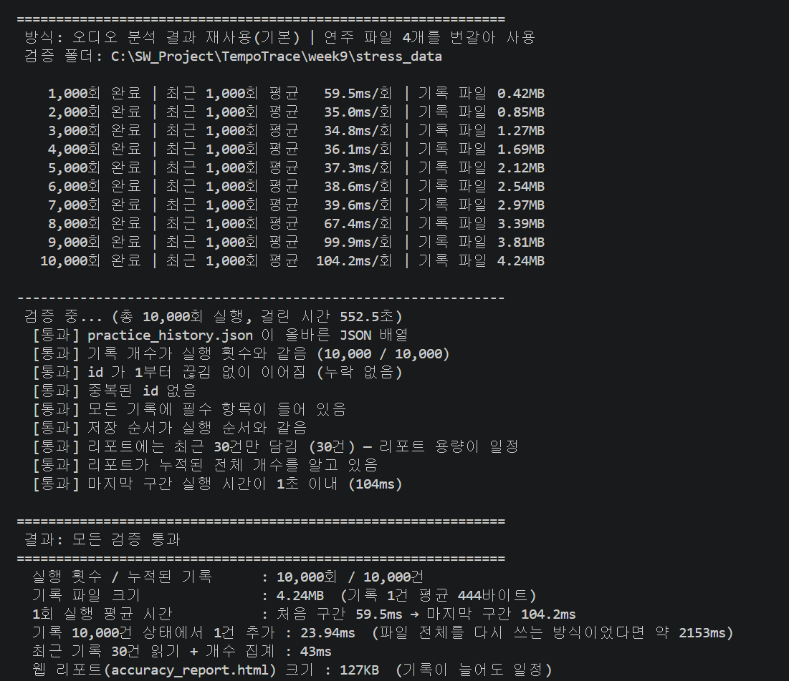

①
허용 오차 범위를 바꾸면, 바꾼 값이 기본값이 되고 결과 추이도 함께 바뀌도록 수정7주차: 기준을 바꿔도 연습 기록(추이)은 그대로였음
②
10,000번 실행해도 json에 데이터가 누적되는지 확인7주차: 기록 개수에 제한이 있었고, 많이 쌓였을 때의 동작을 검증하지 않았음
③
기준값(150ms)을 페이지 안에서 바로 바꾸고, 바뀐 결과가 즉시 나타나도록 구현7주차: 슬라이더는 있었지만 현재 연주 결과만 바뀌었음
| 기존 문제 | 이번에 한 것 | |
|---|---|---|
| 피드백 ① | 연습 기록에는 "그날의 정확도 숫자"만 저장되어, 기준을 바꿔도 과거 회차는 바꿀 수 없었음 | 기록마다 onset 원본을 함께 저장하고, 기준이 바뀌면 모든 회차를 다시 채점. 바꾼 값은 기본값으로 저장 |
| 피드백 ② | 기록이 100개를 넘으면 오래된 것부터 삭제됨. 저장할 때마다 파일 전체를 다시 씀 | 개수 제한을 없애고 한 줄씩 덧붙이는 방식으로 변경. 10,000회 반복 실행 검증 스크립트 추가 |
| 피드백 ③ | 슬라이더만 있었고, 바꿔도 연습 기록·표는 그대로였음 | 슬라이더 + 숫자 직접 입력 + ±5 버튼. 바꾸는 즉시 페이지 전체가 다시 계산됨 |



# 분석 + 리포트 서버 실행 (종료: Ctrl+C) python accuracy_test.py # 기본 기준값을 터미널에서 직접 바꾸기 python accuracy_test.py --tolerance=200 # 서버 없이 파일로만 열기 python accuracy_test.py --no-serve
stress_test.py가 main()을 10,000번 실행한 뒤 자동으로 검증
개수 · id 연속 · 중복 · 필수 항목 · 저장 순서 · 올바른 JSON · 실행 속도
[
{"id":1, "timestamp":"2026-11-03 14:20:05", "original":"original.wav", "take":"my_take.wav",
"tolerance_ms":150, "accuracy":87.5, "missed":2, "extra":1,
"original_onsets":[0.07, 0.51, ...], "user_onsets":[0.07, 0.55, ...]},
{"id":2, ...},
{"id":3, ...}
]
id는 1부터 이어지는 번호 — 누락·중복 여부를 바로 검사할 수 있음original_onsets·user_onsets — 기준값을 바꿔도 이 회차를 다시 채점할 수 있게 하는 원본 데이터--no-serve